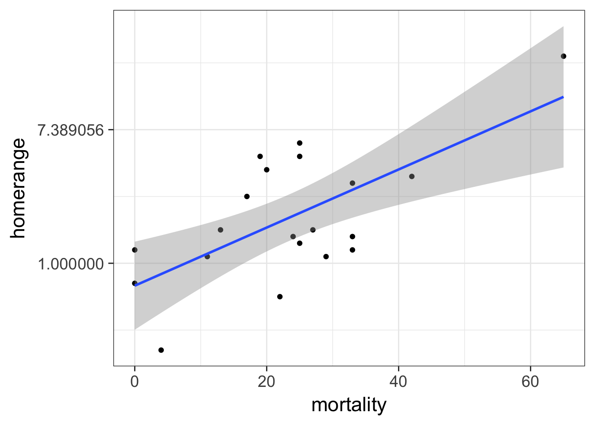
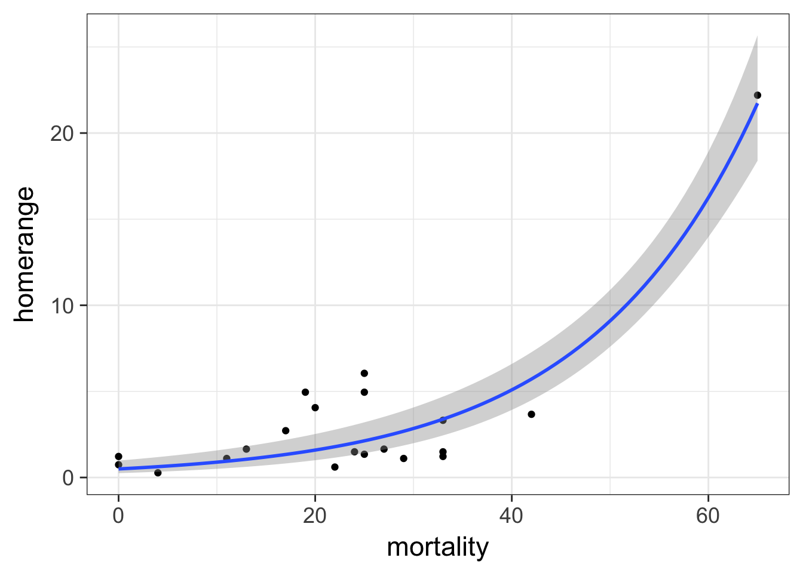
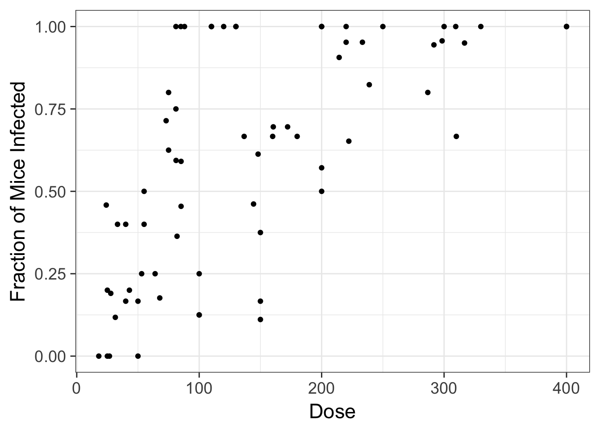
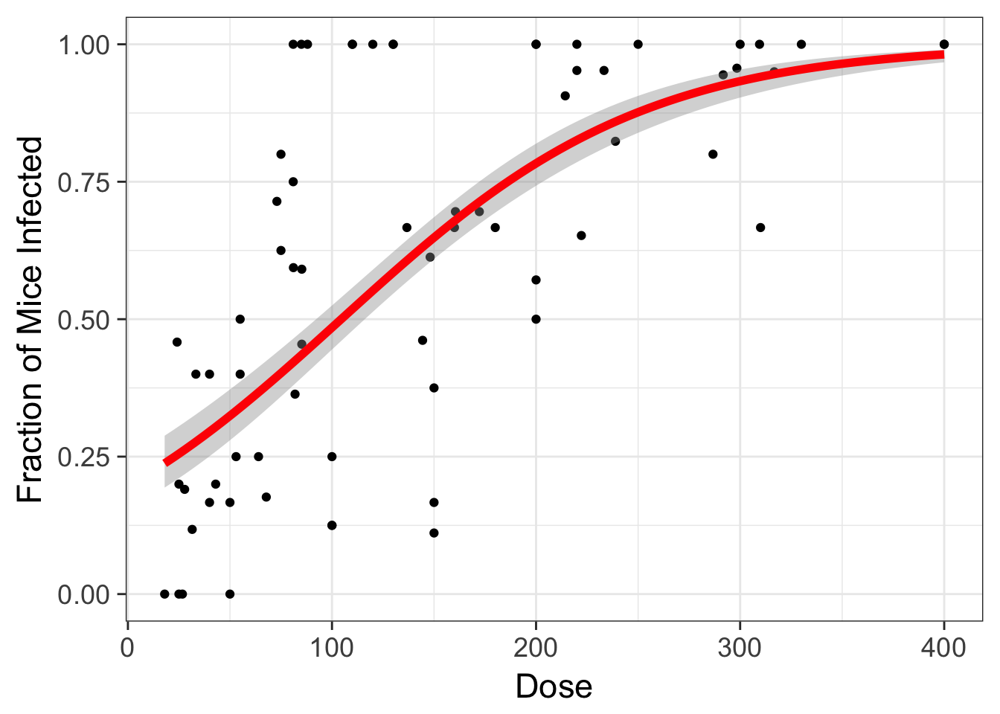
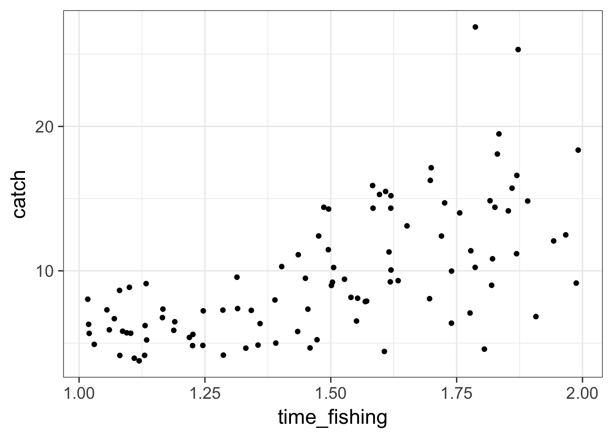
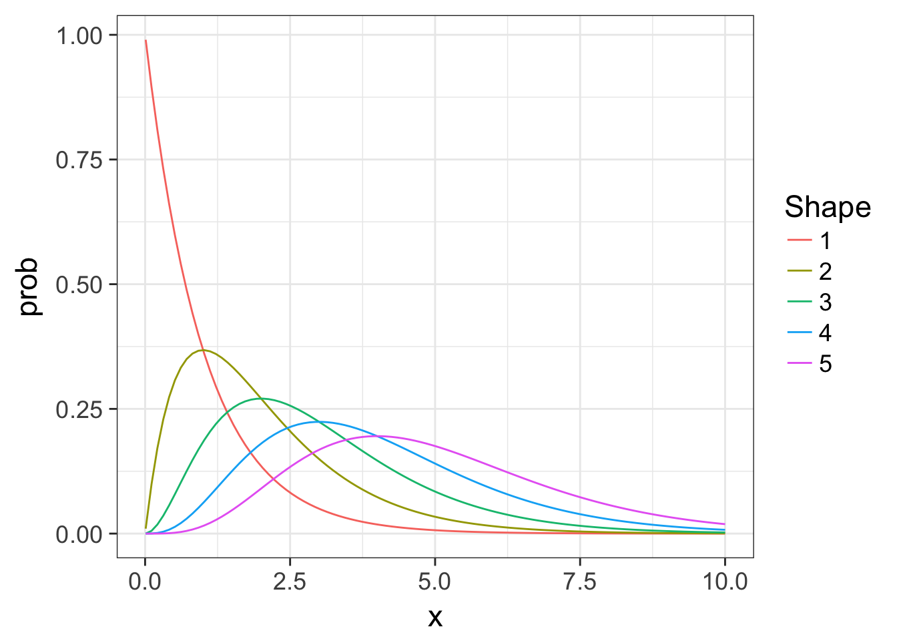
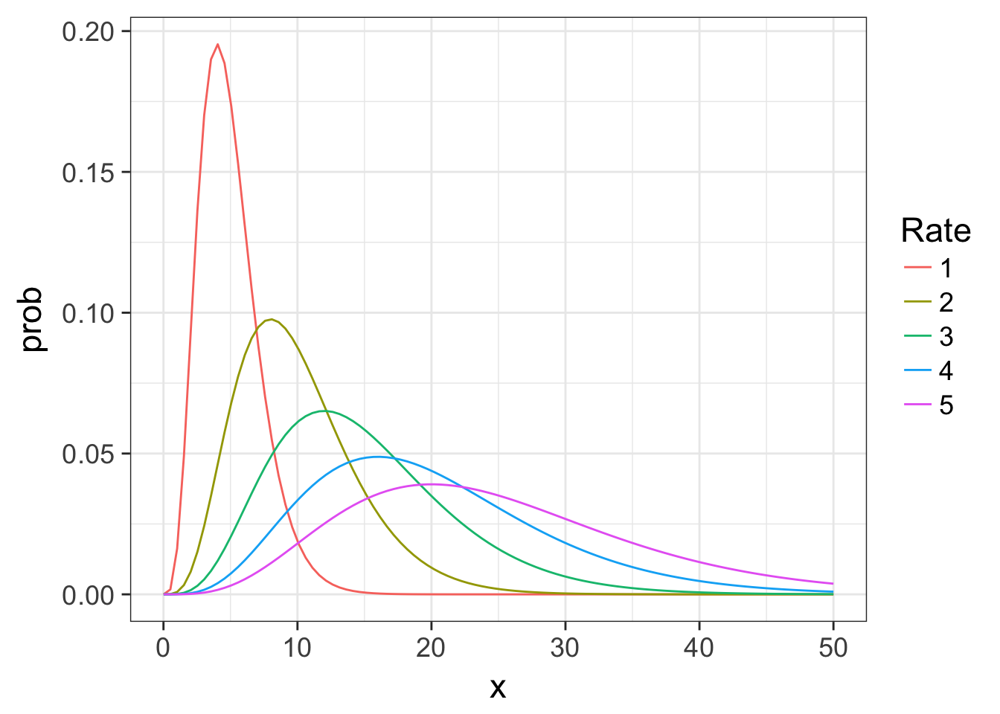

Generalized Linear Models
Surival in the Zoo
Survival Data is often nonlinear and not normal

We can transform…

But non-normal error generating process are also common

The General Linear Model
\[\Large \boldsymbol{Y_i} = \boldsymbol{\beta X_i} + \boldsymbol{\epsilon} \]
\[\Large \epsilon \sim \mathcal{N}(0,\sigma^{2})\]
The General(ized) Linear Model
\[\Large \boldsymbol{\hat{Y}_{i}} = \boldsymbol{\beta X_i} \]
\[\Large Y_i \sim \mathcal{N}(\hat{Y_i},\sigma^{2})\]
The General(ized) Linear Model
\[\Large \boldsymbol{\eta_{i}} = \boldsymbol{\beta X_i} \]
\[\Large \hat{Y_i} = \eta_{i}\] Identity Link Function
\[\Large Y_i \sim \mathcal{N}(\hat{Y_i},\sigma^{2})\]
A Generalized Linear Model
\[\Large \boldsymbol{\eta_{i}} = \boldsymbol{\beta X_i} \]
\[\Large Log(\hat{Y_i}) = \eta_{i}\] Log Link Function
\[\Large Y_i \sim \mathcal{N}(\hat{Y_i},\sigma^{2})\]
Generalized Linear Models Errors
| Error Generating Proces | Common Use | Typical Data Generating Process Shape |
|---|---|---|
| Log-Linear | Error accumulates additively, and then is exponentiated | Exponential |
| Poisson | Count data | Exponential |
| Binomial | Frequency, probability data | Logistic |
| Gamma | Waiting times | Inverse or exponential |
Connections Between Errors

Generalized Linear Models Errors
| Error Generating Proces | Common Use | Typical Data Generating Process Shape |
|---|---|---|
| Log-Linear | Error accumulates additively, and then is exponentiated | Exponential |
| Poisson | Count data | Exponential |
| Binomial | Frequency, probability data | Logistic |
| Gamma | Waiting times | Inverse or exponential |
Log-Normal Distributions
\[ Y_i \sim LN(\mu, \sigma^2)\]
- Used for data whose error is additive, but from multiplicative process
- \(Y_i = e^X + e^{\epsilon_i}, \epsilon_i \sim N(0, \sigma^2)\)
- Error is additive
- E.g. variance is from external sources, happens to be LN - This is very different form a log transform
- \(Y_i = e^{x}e^{\epsilon_i}\)
- Error is multiplicative
- E.g., variance is something that accumulates over time
The GLM
Our two big questions
- Does our model explain more variation in the data than a null model?
- Are the parameters different from 0?
Evaluating the DGP: \(\chi^2\) Likelihood Ratios
- We fit GLMs using different techniques
- A model has a Likelihood of the model given the data
- The ratio of the likelihood of the model versus the likelihood of a null model is \(\chi^2\) distributed
- It’s like an F test, but with Likelihoods instead of Mean Squares
\(\chi^2\) Likelihood Ratios
## Analysis of Deviance Table (Type II tests)
##
## Response: homerange
## LR Chisq Df Pr(>Chisq)
## mortality 105.68 1 < 2.2e-16 ***
## ---
## Signif. codes: 0 '***' 0.001 '**' 0.01 '*' 0.05 '.' 0.1 ' ' 1Plotting with stat_smooth and glms
Plotting with stat_smooth and glms

Generalized Linear Models Errors
| Error Generating Proces | Common Use | Typical Data Generating Process Shape |
|---|---|---|
| Log-Linear | Error accumulates additively, and then is exponentiated | Exponential |
| Poisson | Count data | Exponential |
| Binomial | Frequency, probability data | Logistic |
| Gamma | Waiting times | Inverse or exponential |
Does Size of Holdfast Matter?

- Kelps are held to rock by holdfasts
- Older kelps have bigger holdfasts
- Does size of holdfast influence number of stipes from kelp?
Does Size of Holdfast Matter?

Poisson Distributions
\[Y_i \sim P(\lambda)\]
- Discrete Distribution
- Used for count data
- \(\lambda\) = mean
- Variance increases linearly with mean
The GLM
Fit
Generalized Linear Models Errors
| Error Generating Proces | Common Use | Typical Data Generating Process Shape |
|---|---|---|
| Log-Linear | Error accumulates additively, and then is exponentiated | Exponential |
| Poisson | Count data | Exponential |
| Binomial | Frequency, probability data | Logistic |
| Gamma | Waiting times | Inverse or exponential |
Cryptosporidum Infection Rates

Binomial Distribution
\[ Y_i \sim B(prob, size) \]
- Discrete Distribution
- prob = probability of something happening
- size = # of discrete trials
- Used for frequency or probability data
- We estimate coefficients that influence prob
Generalized Linear Model with a Logit Link
\[\Large \boldsymbol{\eta_{i}} = \boldsymbol{\beta X_i} \]
\[\Large Logit(\hat{Y_i}) = \eta_{i}\] Logit Link Function
\[\Large Y_i \sim \mathcal{B}(\hat{Y_i}, size)\]
Logit Link

McElreath’s Statistical Rethinking
Logitistic Regression

Generalized Linear Model with Logit Link
OR, with Success and Failures
Outputs
| LR Chisq | Df | Pr(>Chisq) | |
|---|---|---|---|
| Dose | 233.8357 | 1 | 0 |
And logit coefficients
| term | estimate | std.error | statistic | p.value |
|---|---|---|---|---|
| (Intercept) | -1.4077690 | 0.1484785 | -9.481298 | 0 |
| Dose | 0.0134684 | 0.0010464 | 12.870912 | 0 |
Generalized Linear Models Errors
| Error Generating Proces | Common Use | Typical Data Generating Process Shape |
|---|---|---|
| Log-Linear | Error accumulates additively, and then is exponentiated | Exponential |
| Poisson | Count data | Exponential |
| Binomial | Frequency, probability data | Logistic |
| Gamma | Waiting times | Inverse or exponential |
How long should you fish?

Example from http://seananderson.ca/2014/04/08/gamma-glms/
Mo’ Fish = Mo’ Variance

The Gamma Distribution
\[Y_i \sim Gamma(shape, scale)\]
- Continuous Distribution, bounded at 0
- Used for time data
- \(shape\) = number of events waiting for
- \(scale\) = time for one event
- Variance increases with square mean
The Gamma Distribution: Rate = 1

The Gamma Distribution: Shape = 5

The Gamma Distribution in Terms of Fit
\[Y_i \sim Gamma(shape, scale)\]
For a fit value \(\hat{Y_i}\):
- \(shape = \frac{\hat{Y_i}}{scale}\)
- \(scale = \frac{\hat{Y_i}}{shape}\)
- Variance = \(shape \cdot scale^2\)
The Gamma Fit with a Log Link
| LR Chisq | Df | Pr(>Chisq) | |
|---|---|---|---|
| time_fishing | 93.38621 | 1 | 0 |
| Estimate | Std. Error | t value | Pr(>|t|) | |
|---|---|---|---|---|
| (Intercept) | 0.5399 | 0.1752 | 3.0812 | 0.0027 |
| time_fishing | 1.1304 | 0.1158 | 9.7637 | 0.0000 |
Gamma Fit on a Plot
fish_plot +
stat_smooth(method = "glm",
method.args=list(family=Gamma(link="log")),
col="red", lwd=2) 
How to Choose Among GLMs
- Is your data continuous or count
- How does the variance scale with the mean?
- What is the shape of your relationship from the DGP?